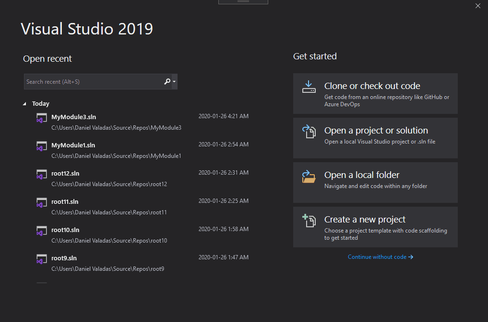
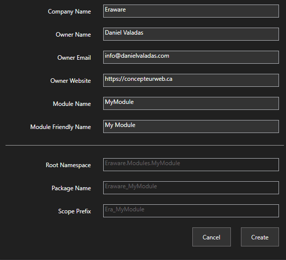
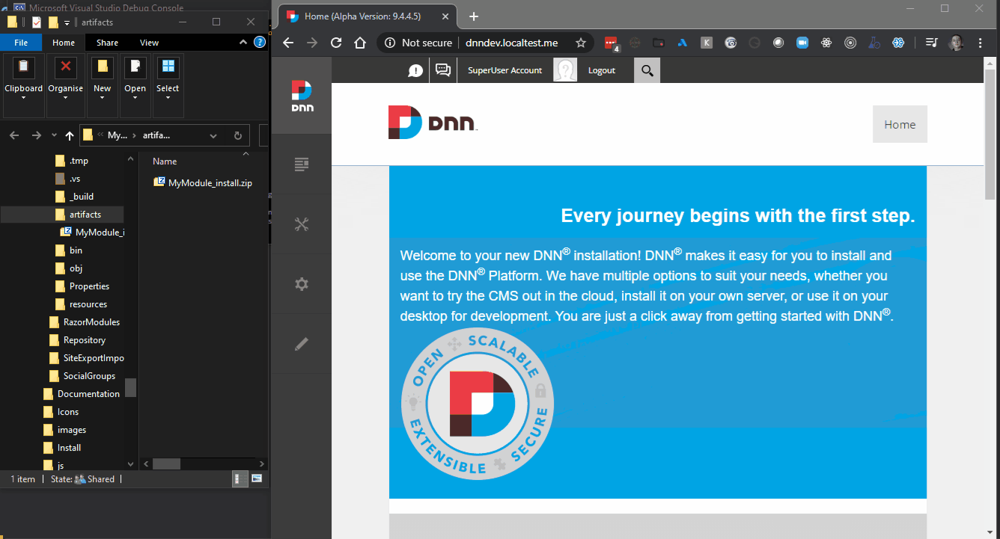

Create a new project: the project name will be the module folder name, so make sure it is a safe name for a folder. In the location field, select the DesktopModules folder of a local working Dnn Website.

Setup your project: A wizard will show to customize your project, enter the required details for your module, the fields under the line are auto-generated but you could override them if you click on them.

Package the module: Tasks are placed in the launch profiles menu in Visual Studio, click the debug button with the Package profile selected.
This will fire up a console application to run the module build and then open up the artifacts directory where you will find your module package.
Note: The build script is simply a console application in the build project, it uses Nuke to help with utilities.
You can later customize that process simply by editing the Build.cs file.

Install your module: Now that the package is open in explorer, open up your dnn website and install the module as usual.
